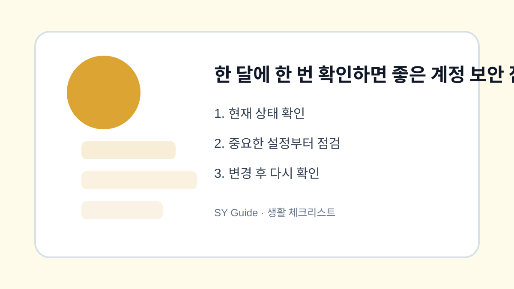

한 달에 한 번 확인하면 좋은 계정 보안 점검표
주요 계정의 로그인 기록, 비밀번호, 복구 정보, 연결 서비스를 한 달에 한 번 점검하는 방법입니다.

계정 보안은 문제가 생겼을 때만 확인하면 늦을 수 있습니다. 한 달에 한 번 정해진 순서로 로그인 기록과 연결 서비스를 확인하면 이상 징후를 빨리 발견할 수 있습니다. 특히 메일 계정은 여러 서비스의 복구 수단으로 쓰이기 때문에 우선순위가 높습니다.
로그인 기록과 기기 확인
Google, 네이버, 카카오 계정에서 최근 로그인 기록과 연결된 기기를 확인합니다. 낯선 지역이나 오래된 기기가 보이면 로그아웃하고 비밀번호를 변경합니다. 본인이 사용한 기록인지 헷갈릴 때는 날짜와 기기 이름을 함께 봅니다.
복구 정보와 연결 서비스
복구 전화번호와 이메일이 오래되면 계정 복구가 어려워집니다. 또한 예전에 가입한 외부 서비스가 계정에 연결되어 있을 수 있으므로 사용하지 않는 연결은 해제합니다. 작은 정리가 큰 사고를 줄입니다.
| 점검 항목 | 확인 주기 | 조치 |
|---|---|---|
| 로그인 기록 | 월 1회 | 낯선 접속 확인 |
| 복구 정보 | 분기 1회 | 최신 정보 유지 |
| 연결 서비스 | 월 1회 | 미사용 해제 |
| 비밀번호 | 필요 시 | 중복 사용 금지 |
계정과 개인정보를 지키는 최종 점검
- 메일 계정부터 로그인 기록 확인하기
- 사용하지 않는 기기 로그아웃하기
- 복구 전화번호와 이메일 최신화하기
- 외부 연결 서비스 정리하기
- 중요 계정은 2단계 인증 켜기
보안 점검은 어렵게 할 필요가 없습니다. 매달 같은 날 10분만 투자해도 계정 도용 위험을 크게 줄일 수 있습니다.
한 달에 한 번 확인하면 좋은 계 실제 상황 예시
한 달에 한 번 확인하면 좋은 계 관련 문제는 대부분 한 가지 메뉴만으로 해결되지 않습니다. 알림, 권한, 저장공간, 계정 상태처럼 여러 설정이 연결되어 있기 때문에 현재 상태를 먼저 확인하고 하나씩 바꾸는 방식이 안전합니다. 이렇게 하면 어떤 변경이 실제로 효과가 있었는지도 파악하기 쉽습니다.
한 달에 한 번 확인하면 좋은 계에서 피해야 할 실수
실수는 대개 급하게 처리할 때 생깁니다. 저장공간이 부족하다고 바로 삭제하거나, 보안이 걱정된다고 모든 권한을 꺼버리면 필요한 기능까지 멈출 수 있습니다. 변경 전후를 비교하고, 중요한 자료나 계정은 공식 도움말을 확인한 뒤 진행하는 것이 좋습니다.
한 달에 한 번 확인하면 좋은 계 관련 설정을 먼저 확인해야 하는 이유
한 달에 한 번 확인하면 좋은 계 관련 설정은 단순히 메뉴 하나를 켜고 끄는 문제가 아니라, 실제 사용 흐름에서 어떤 불편을 줄이려는지 먼저 정해야 합니다. 같은 메뉴라도 기기 제조사, 운영체제 버전, 앱 업데이트 상태에 따라 이름이 달라질 수 있으므로 현재 화면을 기준으로 차근차근 확인하는 것이 좋습니다.
한 달에 한 번 확인하면 좋은 계에서 자주 생기는 실수
많은 사용자가 바로 삭제하거나 초기화하는 방식으로 문제를 해결하려 하지만, 그 전에 현재 상태를 기록해 두면 되돌리기가 쉽습니다. 알림, 권한, 저장공간, 로그인 상태처럼 서로 연결된 항목은 하나씩 바꾼 뒤 실제로 원하는 결과가 나오는지 확인해야 합니다.
한 달에 한 번 확인하면 좋은 계 점검 후 다시 볼 부분
가족 기기나 업무용 계정에서는 본인에게는 사소한 변경도 다른 사람에게 큰 불편이 될 수 있습니다. 변경 전 백업 여부를 확인하고, 중요한 계정이나 자료가 관련되어 있다면 공식 도움말을 함께 보면서 진행하는 편이 안전합니다.